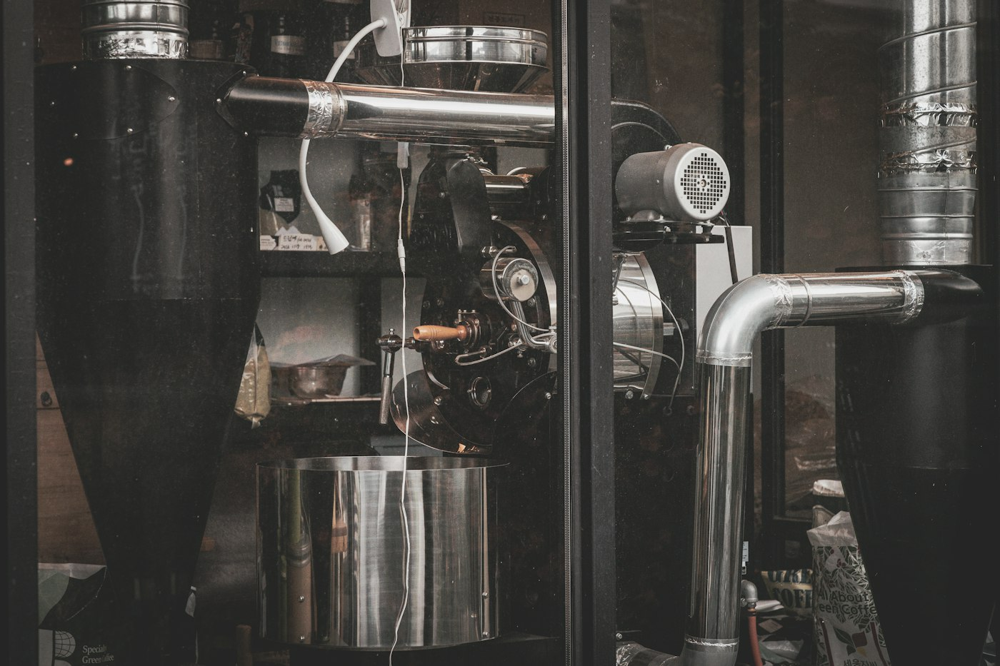

PLOOMI JOURNAL / COFFEE FOR BUSINESS
Good coffee.
Better questions.
Thoughtful guides for people choosing, brewing and serving coffee in Kerala and across India.
 ORIGIN & MENU / 3 MIN READ
ORIGIN & MENU / 3 MIN READKerala Robusta: what the production numbers mean for your café menu
Explore Coffee Board estimates for Kerala and Wayanad, and a practical way to evaluate Robusta on a café menu.
Read article ↗ FOR YOUR BAR / 3 MIN READ
FOR YOUR BAR / 3 MIN READHow to evaluate coffee samples for your café: a working bar test
A practical coffee sample comparison for cafés: espresso, milk drinks, repeatability, records and supplier questions.
Read article ↗ RUNNING YOUR CAFÉ / 3 MIN READ
RUNNING YOUR CAFÉ / 3 MIN READHow much coffee does your café need? A practical calculation
Calculate monthly coffee consumption and coffee cost per dose with a worked café example, including waste and ordering buffer.
Read article ↗
BUYING BETTER / 3 MIN READHow to compare wholesale coffee quotes beyond the price per kilo
A practical checklist for Indian café owners comparing coffee quotes, sample costs, delivery, availability and terms.
Read article ↗